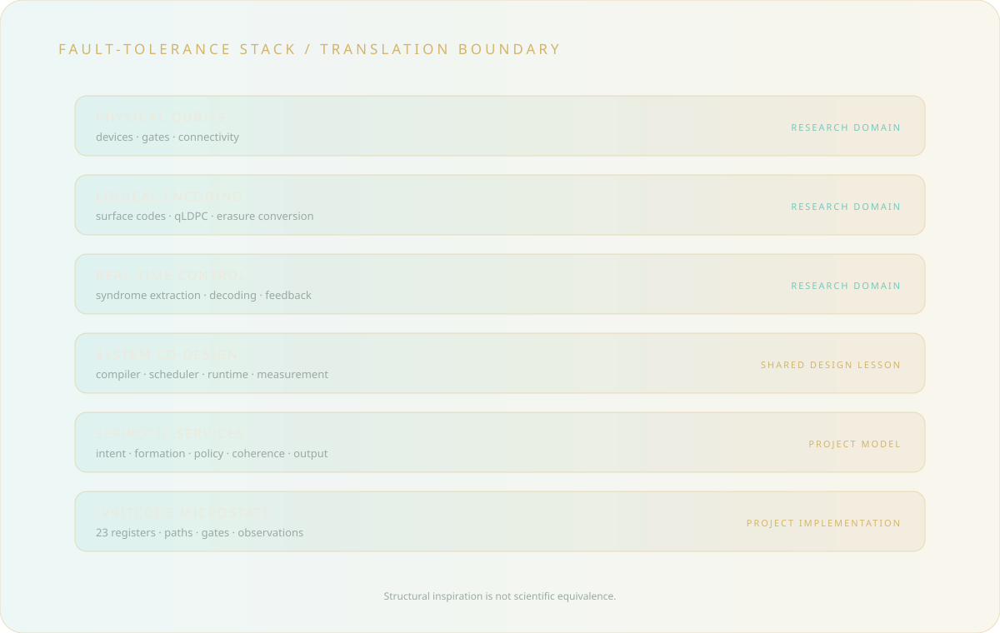

Observe the frontier
Track error correction, connectivity, decoding, scheduling, and co-design through primary research.
This stack separates physical quantum-computing claims from shared systems lessons and from the implemented Quantum Etz Chaim software.

Physical qubits, logical encoding, syndrome extraction, decoding, feedback, and experimentally demonstrated logical operations belong to quantum-computing research. Claims in these layers require external scientific evidence.
Sefirotic service names, the 23-register IvritCode state, path maps, gate descriptions, coherence visualizations, and manifestation formats are explicit project conventions implemented in software.
Track error correction, connectivity, decoding, scheduling, and co-design through primary research.
Use modularity, redundancy, bounded control, traceability, and verification as general engineering lessons.
Mark every symbolic correspondence as a project choice rather than a physical identity.
Test the code against its published contracts without presenting simulation as quantum hardware.
Quantum-computing research motivates systems principles used in this experimental architecture.
The Tree of Life is not asserted to predict quantum mechanics, and this software is not asserted to run on physical qubits.